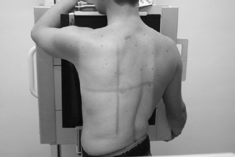

Chest(Oblique)
Centering point:Directed to the level of T7 (for Anterior Obliques)
Directed 10 cm inferior to the jugular notch (for Posterior Obliques)
Perpendicular to the IR

Cassette Size:35cm x 43cm (14 x 17 ins)
Potrait
Exposure Factors:80kVp on
32MaS
FFD:180cm
Bucky/Grid:Moving or Stationary Grid
Filter:No
Collimation:Centre: T7 (the level of the inferior border of the scapula)
Shutter A: Open to approximately 5 cm above the shoulder to include the upper airway
Shutter B: Open to include soft tissue borders laterally
Pathologies:Pathologies involving the lung fields, abnormal cardiac shadows and mediastinal structures
Position of patient and cassette
- Anterior Oblique
- Patient erect, standing or seated, facing the bucky
- From this PA position, rotate the patient 45°, the shoulder maintaining contact with the bucky (the side of interest is further from the bucky)
- Centre the chest to the IR
-
Remove the arms from the area of interest by
placing the hand on the side closest to the bucky on the patient's hip
- Raise the arm on the side away from the bucky to shoulder level and rest their hand on the top of the bucky for support
- Ensure shoulders are in the same horizontal plane
- Posterior Oblique
- Patient erect, standing or seated, with their back to the bucky
- From this AP position, rotate the patient 45°, the shoulder maintaining contact with the bucky (the side of interest is closer to the bucky)
- Centre the chest to the IR
-
Remove the arms from the area of interest by
-
Raising the arm on the side closest to the bucky to shoulder level
placing the hand on the side further from the film on the patient's hip
- Ensure shoulders are in the same horizontal plane
Critique:
- The patient's chest is obliqued 45°, evidenced by
- The sternoclavicular joints do not superimpose the thoracic spine
-
The thoracic spine is shown so that the lungs/ribs on one side occupies twice as much space as on the other side
-
on an RAO, the cardiac shadow is shown without spinal superimposition (an LAO requires 60° obliquity to achieve this)
-
on an LPO, the cardiac shadow is shown without spinal superimposition (an RPO requires 60° obliquity to achieve this)
-
The 10th posterior ribs will be visualised above the diaphragm on full inspiration
-
-
Area Covered
Lungs fields, apices, costophrenic angles, heart
-
Collimation
- Centre: At the level of the T7 Thoracic vertebra, and centred to the chest cavity as visualised on the image
- Shutter A: Open to show the lung apices superiorly and the costophrenic angles inferiorly
-
Shutter B: Open to show the lung fields laterally
-
Exposure
- the ribs are seen faintly through the heart
- the thoracic vertebrae are visualised
- vascular lungs markings are shown
-
the cardiac shadow and mediastinal structures are visualised